.png)
.png)
In this project I am going to implement diffusion sampling loops and use them to create optical illusions. In the first half of the project I am going to use DeepFloyd IF diffusion model from Stability AI.
Here are few examples of generated images with different number of inference steps.
.png)
.png)
.png)
.png)
.png)
.png)
In this part of the problem set, I will write "sampling loops" that use the pretrained DeepFloyd denoisers. These should produce high quality images such as the ones generated above.
Starting with a clean image, x0 , we can iteratively add noise to an image, obtaining progressively more and more noisy versions of the image, xt , until we're left with basically pure noise at timestep t=T . When t=0 , we have a clean image, and for larger t more noise is in the image. A diffusion model tries to reverse this process by denoising the image. By giving a diffusion model a noisy xt and the timestep t , the model predicts the noise in the image. With the predicted noise, we can either completely remove the noise from the image, to obtain an estimate of x0 , or we can remove just a portion of the noise, obtaining an estimate of x^t−1 , with slightly less noise. To generate images from the diffusion model (sampling), we start with pure noise at timestep T sampled from a gaussian distribution, which we denote x^T . We can then predict and remove part of the noise, giving us x^T−1 . Repeating this process until we arrive at x0 gives us a clean image.
Here is an example of the forward process applied to an image.
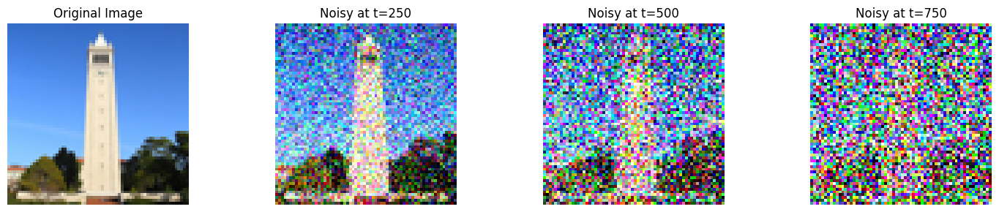I tried Gaussian blur to denoise the image with kernel size 5 and sigma 3.
.png)
Next, I implemented one-step denoising. Here is an approximate algorithm.
.png)
.png)
Diffusion models are designed to denoise iteratively. In this part we will implement this. In theory, we could start with noise x_1000 at timestep T=1000 , denoise for one step to get an estimate of x_999 , and carry on until we get x_0 . But this would require running the diffusion model 1000 times, which is quite slow (and costs $$$). It turns out, we can actually speed things up by skipping steps. To skip steps we can create a list of timesteps that we'll call strided_timesteps, which will be much shorter than the full list of 1000 timesteps. strided_timesteps[0] will correspond to the noisiest image (and thus the largest t ) and strided_timesteps[-1] will correspond to a clean image (and thus t=0 ). One simple way of constructing this list is by introducing a regular stride step (e.g. stride of 30 works well). On the ith denoising step we are at t= strided_timesteps[i], and want to get to t′= strided_timesteps[i+1] (from more noisy to less noisy). To actually do this, we have the following formula:

Here is a gradual change from a noisy to a clean image.
The same algorithm can be used to generate images from scratch.
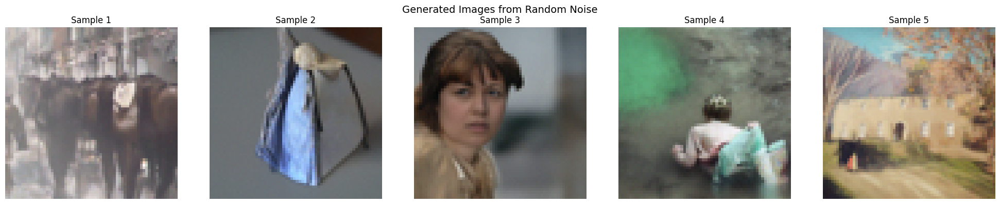You may have noticed that some of the generated images in the prior section are not very good. In order to greatly improve image quality (at the expense of image diversity), we can use a technique called Classifier-Free Guidance. In CFG, we compute both a noise estimate conditioned on a text prompt, and an unconditional noise estimate. We denote these ϵ_c and ϵ_u . Then, we let our new noise estimate be

where γ controls the strength of CFG.
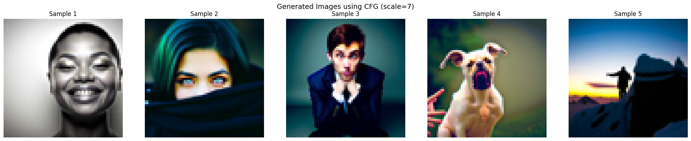In part 1.4, we take a real image, add noise to it, and then denoise. This effectively allows us to make edits to existing images. The more noise we add, the larger the edit will be. This works because in order to denoise an image, the diffusion model must to some extent "hallucinate" new things -- the model has to be "creative." Another way to think about it is that the denoising process "forces" a noisy image back onto the manifold of natural images. Here, we're going to take the original test image, noise it a little, and force it back onto the image manifold without any conditioning. Effectively, we're going to get an image that is similar to the test image (with a low-enough noise level). This follows the SDEdit algorithm. To start, please run the forward process to get a noisy test image, and then run the iterative_denoise_cfg function using a starting index of [1, 3, 5, 7, 10, 20] steps and show the results, labeled with the starting index. You should see a series of "edits" to the original image, gradually matching the original image closer and closer.
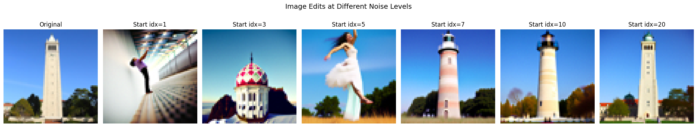 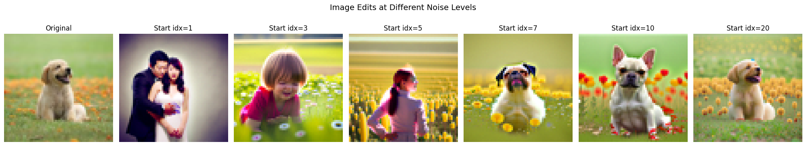 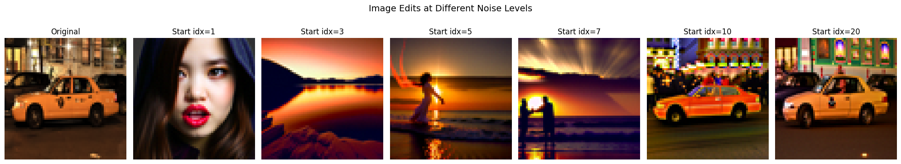This procedure works particularly well if we start with a nonrealistic image (e.g. painting, a sketch, some scribbles) and project it onto the natural image manifold.
 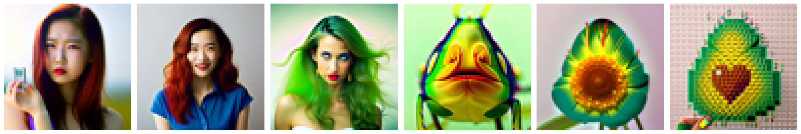
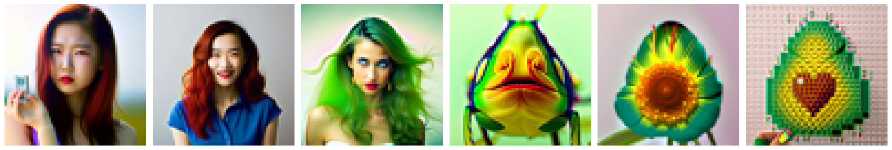
Here are few example with hand drawings
We can use the same procedure to implement inpainting (following the RePaint paper). That is, given an image xorig , and a binary mask m , we can create a new image that has the same content where m is 0, but new content wherever m is 1. To do this, we can run the diffusion denoising loop. But at every step, after obtaining xt , we "force" xt to have the same pixels as xorig where m is 0, i.e.:

Essentially, we leave everything inside the edit mask alone, but we replace everything outside the edit mask with our original image -- with the correct amount of noise added for timestep t .
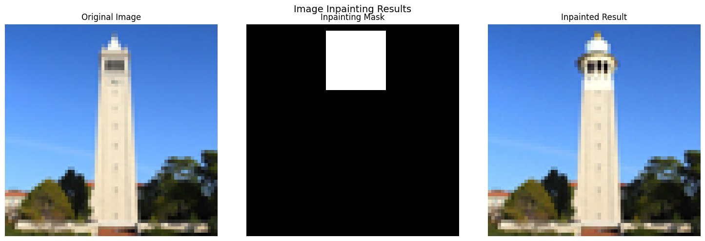WE GET A BEARMAN.
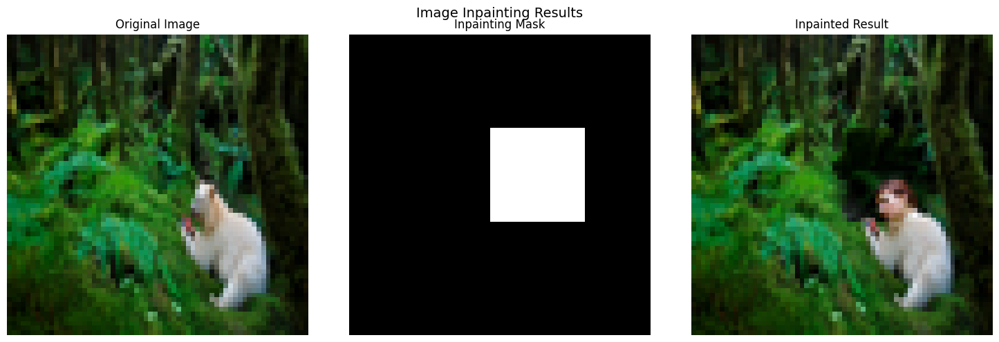Here I got a giant flower.
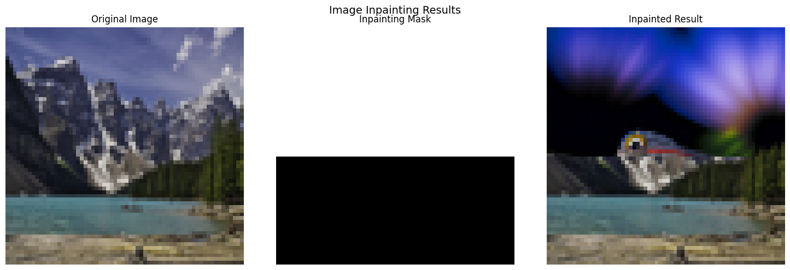By changing the promot we can change the way the image is modified.
We use different noise levels for each prompt [1, 3, 5, 7, 10, 20] which should give us an image that is a closer representation of the original image the higher up we go.
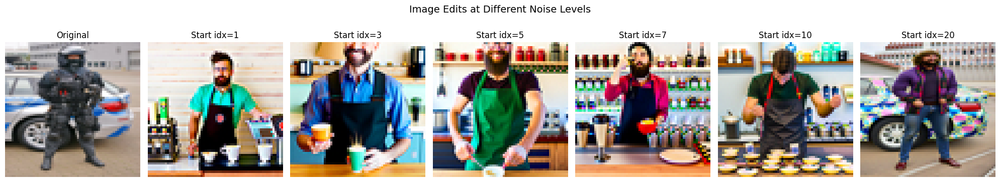 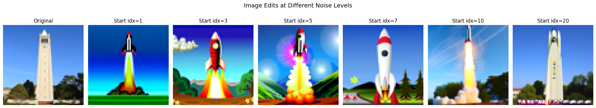In this part, we will create optical illusions — images that appear as one thing but transform into something entirely different when flipped upside down. To achieve this, we modify the way noise is calculated during the image generation process. At step t, we denoise an image x_t using one prompt to obtain epsilon_1. Simultaneously, we flip x_t upside down and denoise it with a different prompt to get another noise estimate epsilon_2. After flipping epsilon_2 back to its original orientation, we average epsilon_1 and epsilon_2 to compute the final noise estimate. This approach allows us to create fascinating illusions that change depending on their orientation.

.png)
.png)
In this part, we will implement Factorized Diffusion to create hybrid images, similar to techniques used in previous projects. This method involves combining noise estimates generated from two distinct text prompts to blend visual elements. Specifically, we compute the noise estimate epsilon_1 using one prompt and epsilon_2 using another prompt. We then apply a low-pass filter to epsilon_1 and a high-pass filter to epsilon_2, combining the results to produce the final noise estimate epsilon. This technique enables the creation of hybrid images, where the visual perception shifts depending on viewing distance — for example, an image that looks like a "skull" from far away but transforms into a "waterfall" up close.
I got the best result with the skull and pencil with a mountain

In this section of the project, we train a diffusion model on the MNIST dataset to generate images of MNIST digits. We'll first start by training a UNet to do single-step denoising, and then we will train a UNet to iteratively denoise by adding time conditioning and class conditioning. We will sample results along the way to see what the model outputs.
In this part, we implement a denoiser as a UNet. The UNet takes in an image with some level of noise added to it, and the UNet outputs a prediction of what the denoised images looks like. We will use the MNIST dataset, which consists of 28×28 pixel black and white images of digits. Below is a diagram of the UNet architecture.

We need noisy images to test the Unet we trained. I am using the following equatin to add noise to images. z=x+σϵ,ϵ∼N(0,I). Here is the visualization of different noise levels.
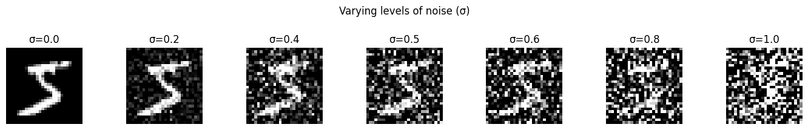.png)
.png)
.png)
.png)
I trained the model on sigma = 0.5 with batch size of 256 and I used Adam optimizer and MSE as a loss function. Here is the graph of a training loss for 5 epochs.
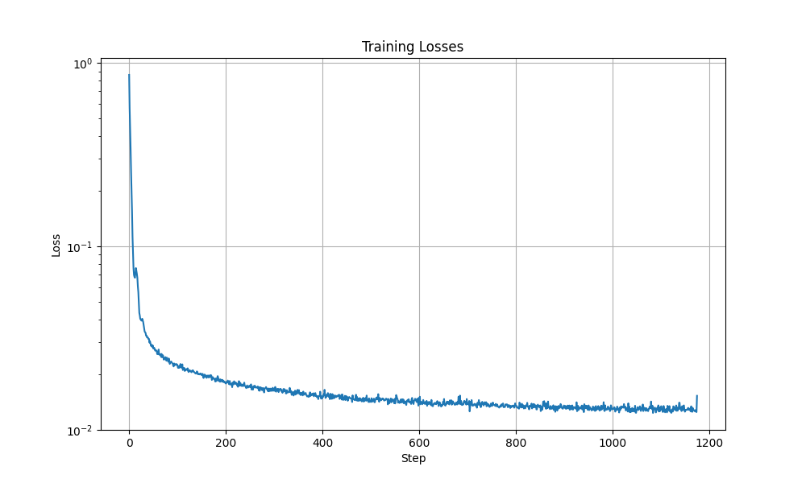After we trained the model we will test denoising on different noise levels. Here are results of our model for sigma = 0.5 for epoch 1 and 5.
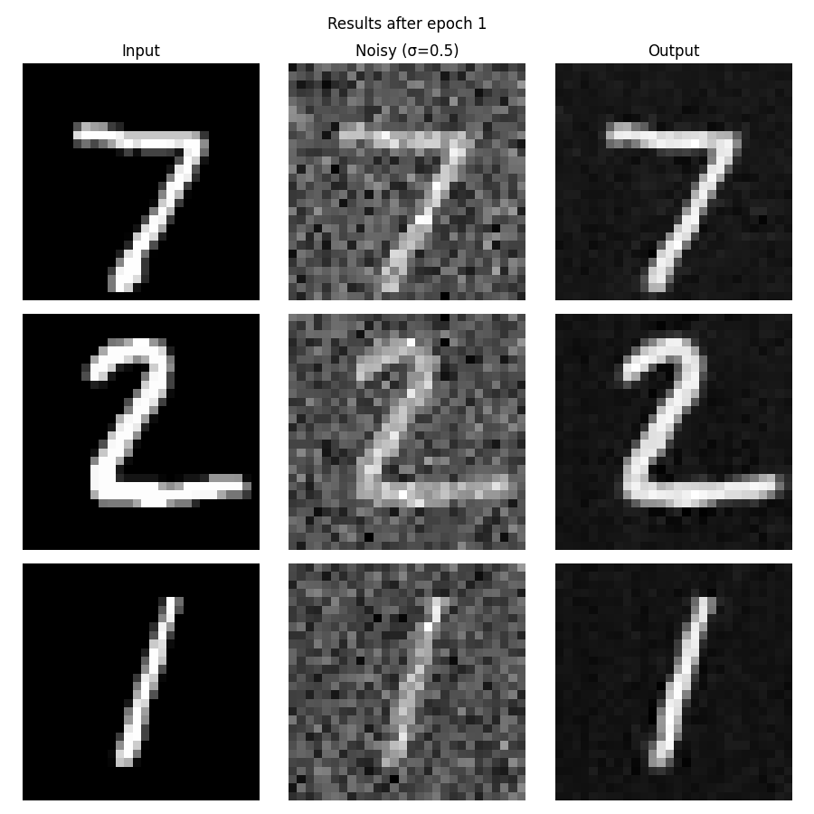 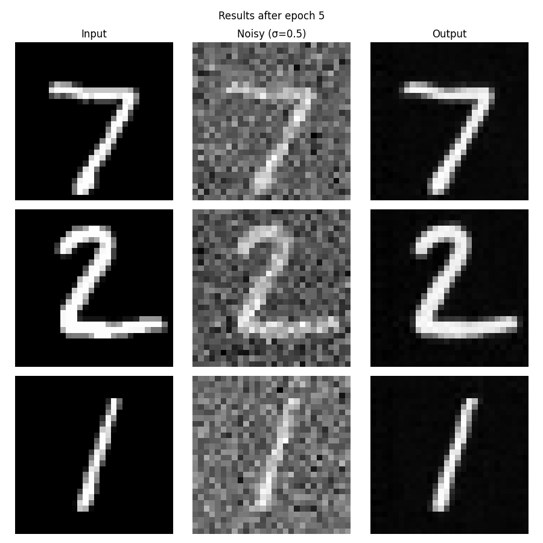We can also run our model for different sigmas.
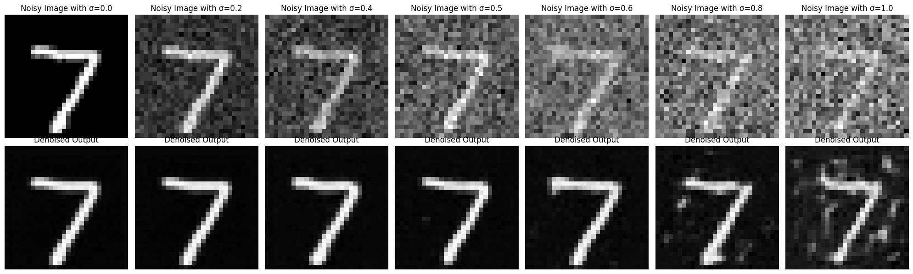We can slightly modify the previous model to predict the noise insteaad of the clean image. This allows to generate a pure image using iterative denoising. Using this equation:

we will generate a noisy image x_t from the pure image x_0. Here is the modified model's diagram.

Training algorithm is slightly modified compared to one-step denoiser and can be fuond in DDPM paper.

Below are result for different epochs.


Results are not very accurate when using time conditioned UNet. To better control the image generation, we can condition our UNet on the class of digits. To represent each class, we will use a one-hot vector. We will also add two additional fully-connected blocks to feed in our class. Moreover, we will also implement dropout, where 10% of the time, we drop the class conditioning by setting the one-hot vector to 0. This is so that our UNet will still work even if it isn't conditioned on a class. For training we are going to use algorithm 3 from DDPM paper.
Class conditioning vastly improves quality of generated digits.